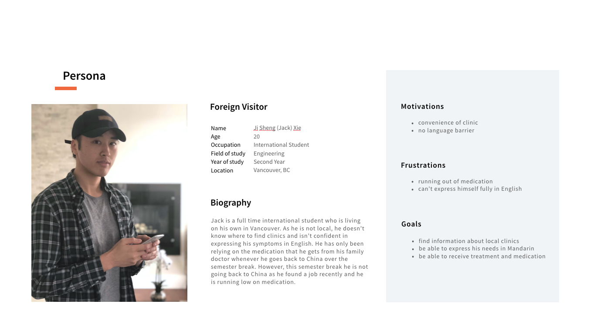

MEDIC
PROPOSAL
MEDIC is a mobile application that provides our users with the tool to find nearby medical clinics and a patient history feature that allows users to input their medical history and see upcoming appointments


Team
Hilary Lui
My Roles
User Research/Testing
Prototyping
Interface Design
User Interaction
Duration
Project Context
We were to research a domain to find a problem we can potentially design for. We saw an opportunity to design for healthcare because it is an industry that can potentially affect everyone, and there is little innovation and intervention right now.
Sector Problem
High proportion of patients may go to the local emergency department because they do not have a family doctor or cannot get a timely medical appointment.
Target Audience
Through our initial user research, we were able to identified that foreign visitors are at the most disadvantaged when seeking medical help because they are not familiar with the area, and don't know where to turn to for help.
Insights
1 — Lack of transparency in the cost of healthcare.“Patients and consumers are now especially disadvantaged when it comes to the lack of transparency around the price and cost of healthcare products and services.”
– NCBI, 2010
2 — 100% of physicians we interviewed said having a shared medical record can help speed up the prescription of medications and knowledge of allergies.
Our Proposal
We wanted to elleviate the friction of finding medical care during crucial times, so we decided to start our intervention before visitors even get sick, while they are still able to contact their health care providers. This way, they can be prepared for when they do in a foreign place.
The loading screen introduces the purpose of the application.
First time users are greeted with a walk through of how they
can get the most out of the application.
Search around a certain location in the search bar.

Click on pin points to browse clinics around their location.

Browse through list of clinics around them based on distance.

Users can browse through each clinic's
offered services to see if they fit their needs.

When booking, they can choose the available dates
and times, fill out their information, and confirm
the details prior to booking.
For easy access during in-office visits, users can bring up
their ongoing medical concerns and allergies for the doctor.
Process
These are 3 of my initial sketches from the clinic screen to choosing a date and time. I first explored the classic calender view, but found that although it was intuitive, it was also overwhelming. I then thought about how to present only relevant information to the users, and came up with 2 more different sketches. The latter 2 focus on only showing the dates when at least one time is available, and going to each date would bring up the available times.
We decided to move forward with the middle sketch because the vertical list layout allows for better scannability with room for bigger font sizes.
Reflection
Healthcare is a big sector. Through researching this domain, I had a better understanding and we were able to scope the problem down to create a feasible solution. This project taught me the importance of gathering all the actors and gaining everyone's point of view. Our intention with Medic was to provide users with options other than the ER. While doing so, we were aware to not involve elements that we don't fully understand yet. Instead, we used empathetic research and motivational design to encourage users to seek medical help at clinics for less severe cases.
We tested our application on some designers because they were around when we were testing. However, we learned to try to test on our intended users as much as possible because the feedback the designers tend to give were more evolved around the design.
(Ps. Growing up in a traditional Chinese family, I was always encouraged to pursue a career in doctor or nursing. Although I didn't, it's interesting to see how that influenced my interests in healthcare now. )